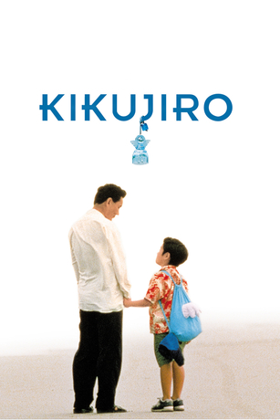
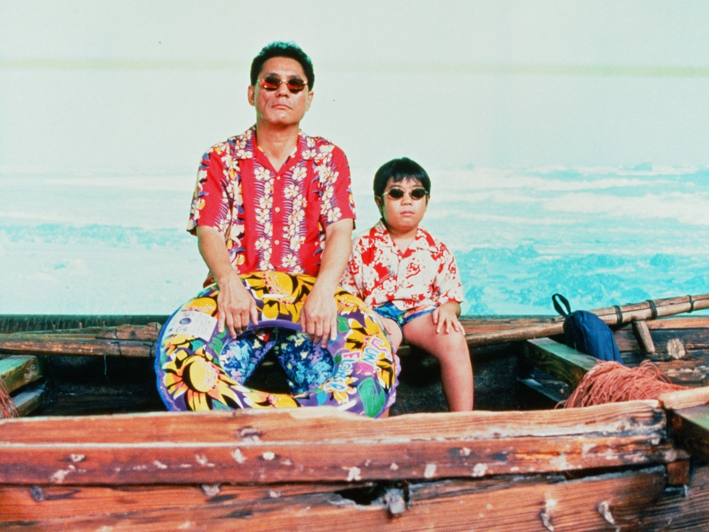
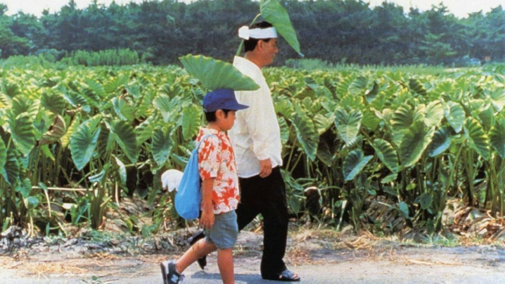

今日观影
菊次郎的夏天
Kikujiro · 菊次郎の夏
一个沉默的男孩，一个不太靠谱的大人。寻找母亲的路，最后成了两颗孤独心灵彼此照亮的夏天。
以下内容涉及剧情海边的两个人 · 图片来自 MUBI 夏日公路 · 图片来自 Empire
解说笔记：这其实是谁的夏天？
表面上，这是正男寻找母亲的公路故事；更深一层，它也写下了菊次郎迟到的成长。正男面对“母亲已经拥有新的家庭”，菊次郎则在养老院门外面对自己的母亲。两个人年龄相差悬殊，却共享着相似的被遗落感。一个想找到母亲，一个不敢走近母亲，他们在旅途中互相照见。
电影用闹剧包裹伤心：赌车、拦车、泳池和草地游戏看似散漫，却不断把正男从失落里拉回来。那些临时加入旅途的陌生人，也共同扮演了“天使”。铃铛并没有真的召来奇迹，但有人愿意笨拙地陪伴，本身就是奇迹。
片名最终落在菊次郎身上，是因为这段旅程改变的不只正男。结合北野武的个人经历来看，“菊次郎”还是他父亲的名字；这场轻盈、滑稽又略带忧伤的夏日旅行，也可以看作导演借电影与父亲、与自己的童年和解。久石让的音乐让这种复杂情绪始终保持明亮：悲伤没有被否认，却被放进了可以继续向前走的节奏里。


值得继续看的解说
文字解读 · 北大讲堂《菊次郎的夏天》：两种孤独在夏天结识从人物关系与《Summer》《The Rain》的音乐变化读电影。
导演背景 · 澎湃新闻从《菊次郎的夏天》开始，打开北野武的电影世界把影片放回北野武的童年、父亲记忆与创作脉络中理解。
视频解说 · YouTube明明是部喜剧片，为什么会让人看哭？适合想快速回顾完整剧情与情绪转折时观看。
资料参考：Sony Pictures 官方剧情页、戛纳电影节官方片目、北大讲堂与澎湃新闻文章。图片来源：海报 © 1999 Office Kitano / Sony Pictures；船上剧照来自 MUBI；公路剧照来自 Empire。图片版权归原权利人所有，仅用于个人观影记录与评论。